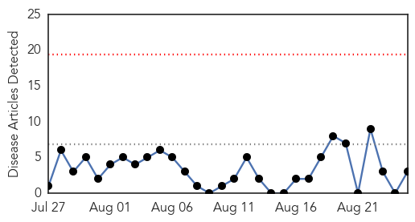
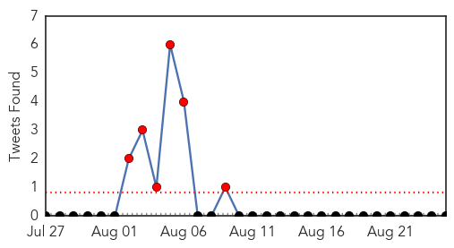
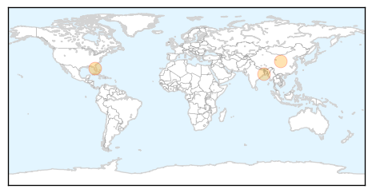

Dengue Fever
30-Day Web Trend
0 alerts, 0 warnings

30-Day Twitter Trend
7 alerts, 0 warnings

Article Locations
Article Confidences

Top Articles:
Top Tweets:
-
No tweets found for Aug 25, 2014
West Nile Virus
30-Day Web Trend
0 alerts, 0 warnings
30-Day Twitter Trend
0 alerts, 0 warnings

Article Locations
Article Confidences

Top Articles:
- 0.992
- OUR VIEW: The buzz on West Nile prevention
- 0.980
- Upper Rogue Independent
- 0.971
- West Nile Virus confirmed in two B.C. horses
- 0.970
- Two infected horses in Interior first signs of West Nile Virus in B.C.
- 0.965
- Conway resident diagnosed with EEE
- 0.933
- First case of West Nile Virus reported in Salt Lake County
- 0.912
- 1st Utahn diagnosed with West Nile fever
Top Tweets:
-
No tweets found for Aug 25, 2014